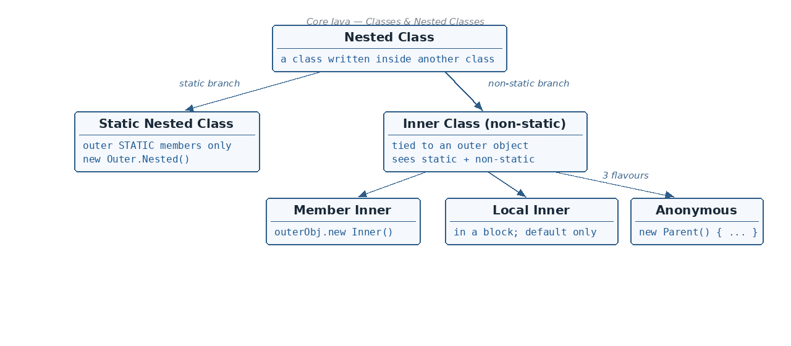

Object — the topmost class in Java
☕ 8 min read · 🎬 Video walkthrough · 📊 UML diagram · 💻 Runnable code
⚡ In a nutshell — What a concrete class is · What an abstract class is (and the 2 ways to hide implementation) · Super class and sub class, and why Object is the root of everything · The famous methods of the Object class (toString, equals, clone, wait, notify)
A concrete class is a "normal, complete" class:

new keyword.public or package-private (package-private means no modifier is written).Analogy: a concrete class is like a finished house — you can move in (new) right away. An abstract class is only a blueprint — you cannot live in a blueprint.
// A concrete class implementing an interface — still concrete,
// because it implements EVERY method with a real body.
interface Animal {
void makeSound();
}
public class Dog implements Animal { // public concrete class
@Override
public void makeSound() { // full implementation
System.out.println("Woof!");
}
public static void main(String[] args) {
Dog d = new Dog(); // 'new' works -> concrete!
d.makeSound();
}
}
Output:
Woof!
Abstraction means: show only the important features to the user and hide the internal implementation.
Example from real life: a car's brake pedal. You only need to know "press it to stop" — you do not need to know the hydraulics behind it.
There are 2 ways to achieve abstraction in Java:
abstract class Vehicle {
// abstract method: WHAT to do, no body — the "important feature" shown
abstract void start();
// abstract classes can also have normal methods (hidden details)
void fuelUp() {
System.out.println("Filling fuel...");
}
}
class Bike extends Vehicle {
@Override
void start() {
System.out.println("Bike starts with a kick");
}
}
public class AbstractDemo {
public static void main(String[] args) {
// Vehicle v = new Vehicle(); // ERROR! Cannot instantiate abstract class
Vehicle v = new Bike(); // but a reference to the child is fine
v.fuelUp();
v.start();
}
}
Output:
Filling fuel...
Bike starts with a kick
Class A <- Super class (parent)
|
| extends
v
Class B extends A <- Sub class (child)
class A { // Super class
void greet() {
System.out.println("Hello from A");
}
}
class B extends A { // Sub class
}
public class SuperSubDemo {
public static void main(String[] args) {
B b = new B();
b.greet(); // inherited from the super class
}
}
Output:
Hello from A
Look at this tiny class:
class Person {
}
It looks like Person has no parent — but it secretly does! If a class does not explicitly extend anything, its super class is Object.
Remember: In Java, in the absence of any other explicit superclass, every class is implicitly a subclass of the
Objectclass.Objectis the topmost class in Java — the great-grandparent of every class you will ever write.
Because of this, every object automatically inherits the useful methods of Object:
toString() — Returns a text description of the object (used when you print it)equals(Object o) — Checks whether two objects are "equal"clone() — Makes a copy of the objecthashCode() — Returns a number used by hash-based collections (HashMap etc.)wait() — Makes the current thread wait (used in multithreading)notify() / notifyAll() — Wakes up waiting thread(s) (used in multithreading)class Person { // implicitly: class Person extends Object
String name = "Asha";
@Override
public String toString() { // overriding Object's method
return "Person named " + name;
}
}
public class ObjectDemo {
public static void main(String[] args) {
Person p = new Person();
System.out.println(p.toString()); // our overridden version
System.out.println(p.equals(p)); // from Object -> true
System.out.println(p instanceof Object); // proof of inheritance
}
}
Output:
Person named Asha
true
true
A class written inside another class is called a Nested Class.
Nested Class
/ \
Static Nested Class Non-static Nested Class
(also known as INNER class)
/ | \
Member Inner Local Inner Anonymous
Class Class Inner Class
In plain words: nested classes split into two branches. The static branch has one kind (static nested class). The non-static branch is called the inner class, and it comes in three flavours: member, local, and anonymous.
A.java), you can create A as a nested class inside B.Analogy: if a remote control is only ever used with one specific TV, you pack it inside the TV's box instead of shipping it separately.
A nested class's scope is the same as its outer class — it lives and dies with the class that contains it.
public or package-private (no modifier) onlyprivate, public, protected, or package-private — all four!Rules:
private, public, protected or package-private (default — no explicit declaration).class OuterClass {
int instanceVariable = 10; // non-static (belongs to an object)
static int classVariable = 20; // static (belongs to the class)
static class NestedClass {
public void print() {
System.out.println(classVariable); // OK - static member
// System.out.println(instanceVariable); // ERROR! non-static
}
}
}
public class StaticNestedDemo {
public static void main(String[] args) {
// Create it directly — NO outer object needed:
OuterClass.NestedClass nestedObj = new OuterClass.NestedClass();
nestedObj.print();
}
}
Output:
20
Remember: a static nested class is like a lodger in the outer class's house — it lives at the same address but has its own key (no outer object needed) and cannot use the family's personal (non-static) belongings.
An inner class is a nested class without the static keyword. Because it is non-static, every inner-class object is tied to an object of the outer class — and it can access both static and non-static members of the outer class.
private, public, protected or default (package-private).outerObject.new syntax.class OuterClass {
int instanceVariable = 10;
static int classVariable = 20;
class InnerClass { // member inner class
public void print() {
// Can access BOTH static and non-static outer members:
System.out.println(classVariable + instanceVariable);
}
}
}
public class MemberInnerDemo {
public static void main(String[] args) {
// Step 1: create the outer object first
OuterClass outerClass = new OuterClass();
// Step 2: use the special 'outerObject.new' syntax
OuterClass.InnerClass innerClassObj = outerClass.new InnerClass();
innerClassObj.print();
}
}
Output:
30
// 1) Static nested class — no outer object needed:
OuterClass.NestedClass nestedObj = new OuterClass.NestedClass();
// 2) Member inner class — outer object needed, note "outer.new":
OuterClass outerClass = new OuterClass();
OuterClass.InnerClass innerClassObj = outerClass.new InnerClass();
for loop, a while loop, an if block, etc.private, protected or public. Only the default access (nothing written) is allowed.class OuterClass {
int instanceVariable = 1;
static int classVariable = 2;
public void display() {
int methodVariable = 3;
class LocalInnerClass { // class inside a method!
int localInnerVariable = 4;
public void print() {
System.out.println(instanceVariable + classVariable
+ methodVariable + localInnerVariable);
}
}
// must be used INSIDE the same block:
LocalInnerClass localObj = new LocalInnerClass();
localObj.print();
}
}
public class LocalInnerDemo {
public static void main(String[] args) {
OuterClass outerClassObj = new OuterClass();
outerClassObj.display(); // 1 + 2 + 3 + 4
}
}
Output:
10
abstract class Car {
public abstract void pressBreak();
}
public class AnonymousDemo {
public static void main(String[] args) {
// We create a subclass and its object in ONE step —
// the subclass has no name, hence "anonymous":
Car audiCar = new Car() {
@Override
public void pressBreak() {
System.out.println("Hi");
}
};
audiCar.pressBreak();
}
}
Output:
Hi
What actually happens: the compiler secretly creates a subclass of Car (named something like AnonymousDemo$1), overrides pressBreak(), and gives you one object of it. You wrote a subclass without ever naming it!
static — private/public/protected/default — No — new Outer.Nested()static — private/public/protected/default — Yes — outerObj.new Inner()new Local() — inside the block onlynew Parent() { ...overrides... }new, all methods implemented; top-level classes can only be public or package-private.class B extends A → A is super, B is sub.Object — the topmost class — giving it toString(), equals(), clone(), hashCode(), wait(), notify().new Outer.Nested().outer.new Inner().👏 Found this useful? Give it a few claps so more developers discover it, and follow for the whole series — every article ships with a UML diagram, runnable code, a narrated video, and a companion PDF. Happy building! 🚀